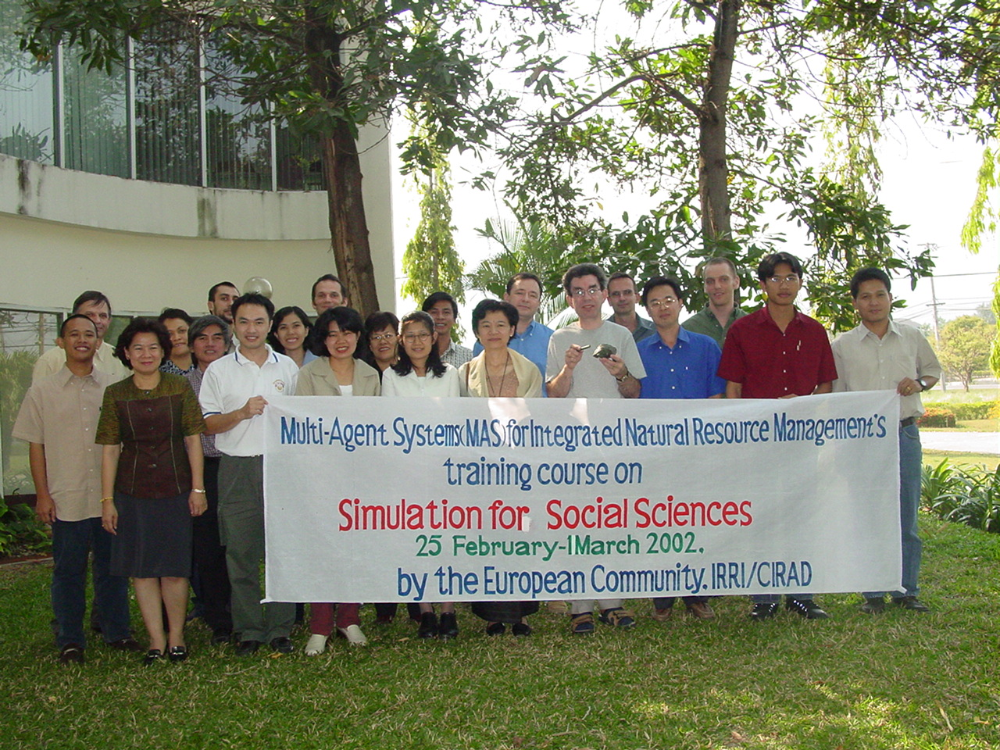

|

Simulation for social sciences
25 February - 1 March 2002, Chiang Mai
Multi-Agent Systems (MAS),
Social Sciences and
Integrated Natural Resource Management (INRM)
Trainer
Report on the training is available
Organizers
- Dr. Benchaphun S. Ekasingh ( University of Chiang-Mai, Multiple
Cropping Center)
- F. Bousquet (CIRAD-IRRI)
For registration or more information about the course, please send an
email to: bousquet@cirad.fr
Participants
Position the mouse on the faces to see the names of the participants.
Methi Ekasingh, Chalermpol Samrapong (CMU), Piyasak Ontaworn,
Sitanon Jesdapipat, Sakunchai Sakundit (Chulalongkorn University) are
missing on this slide.

Course Objectives
To improve knowledge on techniques of developing simulations to help
with the exploration and understanding of social and economic issues.
The emphasis will be on the use of simulation for social sciences. It
will provide a rationale for using simulation in the social sciences and
outline a number of approaches to social simulation at a level of detail
that would enable participants to understand the literature.
Training
| Day |
8h30-10h |
10h30-12h |
13h30-15h |
15h30-17h
|
| Monday 25 |
Opening Ceremony |
|
Group Work |
|
| Tuesday 26 |
Methods |
Discussion session: groups conceive models |
Cellular automata |
Exercice on computer |
| Wednesday 27 |
Multi agent systems: principles |
Example |
Learning and evolutionary modelsGroups conceive models-
computer exercises |
| Thursday 28 |
Participatory models |
|
Free time for discussions, exercices
|
|
| Friday 18 |
|
|
|
|
| |
|
| Monday 21 |
|
| Tuesday 22 |
|
| Wednesday 23 |
|
| Thursday 24 |
|
| Friday 25 |
|
|
|